Mandalaband III: ‘BC - Ancestors’
- Ancestors (Overture)3 mins 58 secs
- Eden 4 mins 39 secs
- Nimrod (Journey’s End) 4 mins 52 secs
- Shemsu-Har 3 mins 04 secs
- Karum Kanesh 5 mins 11 secs
- Beautiful Babylon 3 mins 20 secs
- The Sons of Anak 4 mins 50 secs
- Aten 4 mins 59 secs
- Ozymandias 4 mins 50 secs
- Solomon the Wise 5 mins 35 secs
- Akhiyawa 5 mins 44 secs
- The Wine Dark Sea 4 mins 24 secs
- Elissa 5 mins 32 secs
- Roots 6 mins 58 secs
- play
- pause
- stop
- min volume
- max volume
- previous
- next
Total Running Time: 68 mins 21 secs
The Legends Behind the Music
1. Ancestors (Overture) music by Jose Manuel Medina & David Rohl
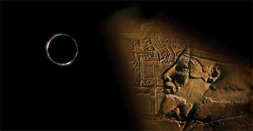The instrumental overture to the album (in 6/8 time) begins with a haunting echo of our mythical past from Troy Donockley’s uilleann pipes which leads into the last chord of The Eye of Wendor album, thus bridging a gap of more than thirty years between Mandalaband II and the new Mandalaband III. The melody lines of the main theme are then taken up by lead guitar (Ashley Mulford), celli and brass before reaching a crescendo with the full string section and a French horn fanfare. The piece comes to an end with a haunting desert violin.
2. Eden music & lyrics by David Rohl; vocal by David Rohl
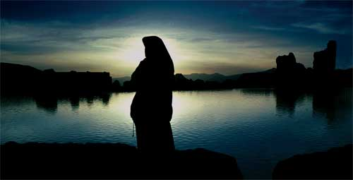The story of BC – Ancestors then begins, as you might expect, at the beginning – in the land of Eden, to the north of Mesopotamia, beyond the high Zagros Mountains, where a lush valley hides, enclosed by mountain ranges of red ochre and snow-capped volcanic peaks.
Through the long, narrow valley runs a river which empties, westwards, into a land-locked salty sea (today known as Lake Urumia). It was here that tradition placed the fabled Garden of Eden, from where Neolithic Man is presumed to have descended into the great plain of the Two Rivers (the Tigris and Euphrates), known to the Greeks as Mesopotamia, to found the civilisations of Sumer, Babylonia and Assyria. The book of Genesis sees this migration as the ‘fall from grace’, when humanity first began its quest for knowledge and civilisation. Neolithic Man gave up his hunter-gatherer lifestyle to settle in village communities where both farming and animal husbandry took hold for the first time. These villages eventually became towns and then large cities as the great civilisations of the ancient world were born.
3. Nimrod (Journey’s End) music & lyrics by Woolly Wolstenholme; vocal by Woolly Wolstenholme
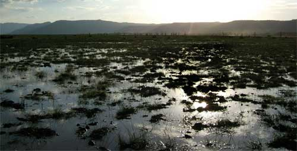It was from this legendary period in our history that we hear of Nimrod the ‘Mighty Hunter’ who, in the wake of the Great Flood, commanded the building of a great tower (the first ziggurat) as a refuge from further devastating floods that the gods may send to destroy mankind. But, in the end, despite Nimrod’s power and influence, the task lay abandoned and unfinished, the people departing to seek out a new homeland with a kinder climate and a more beneficent river which did not flood the fields at the wrong time of year, destroying crops and herds. Many of these early colonizers board high-prowed reed ships to sail out into the Persian Gulf, around the Arabian Peninsula and into the Red Sea, where they cross the Eastern Desert to reach the Nile valley.
This track has several sections, beginning with an orchestral brass crescendo which leaves in its wake a gentle, melancholy, post-flood theme highlighted by various solo orchestral instruments, introducing the song proper with Woolly Wolstenholme on piano and vocal. Then, as we have all come to expect from the Maestoso, the plaintiff sentiments of the two verses, collapse into a chaos of tumbling guitars and drums before the final great chant of the tower’s builders takes hold … and then a brass fanfare to sound the abandonment of the site.
4. Shemsu-Har music by Jose Manuel Medina & David Rohl
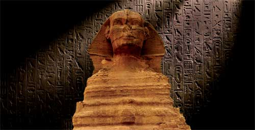These mythical travellers from the east were the founders of Egyptian civilisation, known as the Shemsu-Har – ‘The Followers of Horus’. They were the supporters and clan of the Horus kings who first united the entire land of Egypt by conquest to found the 1st Dynasty five millennia ago.
The track begins with David Rohl reciting an ancient Egyptian incantation, taken from the Pyramid Texts and the Book of the Dead, which raises Pharaoh from his tomb in order to send him on his way to Lightland in the east, from whence the gods had come to Egypt in the mysterious era known as Sep-Tepi – ‘The First Time’ – before the 1st Dynasty. The instrumental then thunders into life with full orchestra and choir, followed by guitar and mellotron in the second verse.
5. Karum Kanesh music & lyrics by David Rohl
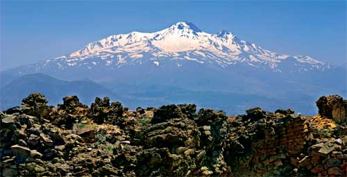Meanwhile, as the early pharaohs begin to build their mighty stone pyramids, back in Mesopotamia the Sumerian civilisation thrives and eventually dies, to be replaced by the great trading empires of Akkad and Assyria further to the north (around the modern cities of Baghdad and Mosul). The merchants of the city of Ashur make contact with the peoples of Anatolia, beyond the Taurus Mountains to the west, setting up trading colonies (karums) in the major cities of that distant region. They bring woven fabric and precious tin (needed to make bronze) from the mountains north of Ashur, carried by long donkey trains through the Cilician Gates (the mountain pass leading up onto the Anatolian plateau), to trade for smelted bronze (an alloy of copper and tin). The major settlement of these Assyrian colonists is located at Kanesh, in eastern Cappadocia, beneath the towering volcanic peak of Mount Erciyes (central Anatolia’s highest mountain). Karum Kanesh, through its archive of clay tablets, would reveal to archaeologists and scholars the first appearance of Indo-Europeans in the ancient world – the ancestors of the western world. Amongst these Indo-European names was that of Anitta, the ruler of Kanesh, later remembered as the great ancestor of the Hittite nation which, centuries later, fought Ramesses II at the famous Battle of Kadesh.
This ambient instrumental track, with its ‘clan chorus’, features Craig Fletcher on fretless bass guitar, but opens with Barbara Macanas humming a mother’s comfort to her baby (representing the Assyrian women left behind in Ashur whilst their men head off to Cappadocia, often not returning for many years). The theme of the piece is first taken up by viola and then uilleann pipes before the ‘Karum Kanesh’ vocal by the band choir. A gentle bass solo follows before the clan chant transports us through the Cilician Gates to Kanesh. Finally Troy’s low whistle brings us to a pastoral ending beneath the great volcano.
6. Beautiful Babylon music & lyrics by David Rohl; vocal by Marc Atkinson
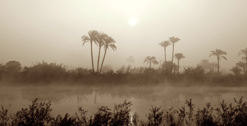The Old Assyrian civilisation was eventually succeeded in Mesopotamia by the First Dynasty of Babylon whose most famous king was the great lawgiver Hammurabi. He built and embellished one of the ancient world’s most famous and enduring cities – Babylon (‘Gate of the Gods’) – which shone out across a dark period in the BC era as a beacon of knowledge and culture. Hammurabi commissioned the building of a library of ancient tablets which would become the source for our greatest prehistoric legends – including much contained in the early part of the book of Genesis. He also gave us the first universal law code which looks to have strongly influenced the later Mosaic laws of the Bible, including the famous ‘an eye for an eye and a tooth for a tooth’. Unfortunately, history reminds us that such havens of wisdom eventually get snuffed out by more powerful barbaric forces envious of what civilisation offers. Within a century of Hammurabi’s death, the beautiful city of Babylon lay in ruins, burnt and destroyed by an invading Hittite army led by King Murshili (second millennium BC), heralding a dark age in Mesopotamia and the rest of the Near East, as the Indo-European states rose as a major power in the ancient world. The city of Babylon was subsequently rebuilt, rising to its second zenith during the time of Nebuchadnezzar II in what we now call the Neo-Babylonian period (6th century BC).
The song introduces Marc Atkinson on vocals for the first time, with lead guitar answers from Ashley.
7. The Sons of Anak music & lyrics by David Rohl; vocal by David Rohl
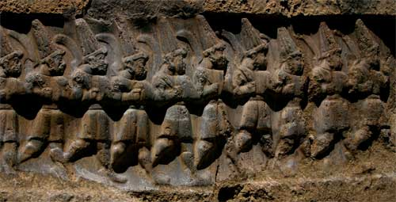The arrival of the Indo-Europeans is marked in the Old Testament by the appearance of the ‘Sons of Anak’ or anakim in the story of Joshua’s Conquest of the Promised Land. The Egyptians, on the other hand, through the words of Manetho, recall the invasion of ‘people of obscure race’ from the east (that is across Sinai). These violent warriors destroy the palaces and temples of Egypt, enslave the Egyptians and sacrifice their female slaves at their own burials. The name given to the rulers of these invading hoards was hekau-khasut – ‘rulers of foreign lands’ – and we know them today as the Hyksos.
David takes on the vocals here to tell the story of the Hyksos invasion from the Egyptian perspective. The driving rhythm of Kim Turner’s drums is punctuated by softer sections where Briony Macanas’ gentle voice reflects the young women of Pharaoh’s court whose fate is about to bring them to an early grave, buried beside the bodies of their foreign oppressors. All this is in Egypt’s dark future as the sons of Anak head across the Sinai desert in their chariots, on their way to war in the eastern delta.
8. Aten music by Jose Manuel Medina & David Rohl
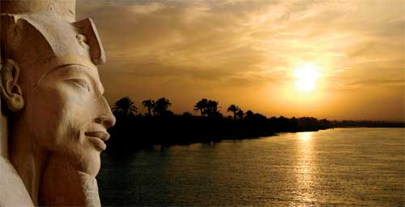Pharaoh Akhenaten was one of the strangest characters of ancient times – the first ruler to worship a single god and the patron of the ‘grotesque’ art style of the Amarna period (late 18th Dynasty). His god was the solar-disc, whom the Egyptians called ‘Aten’, sustainer of all life on Earth with his light and warmth. Akhenaten himself composed a poem to Aten known as the ‘Hymn to the Sun’ upon which this song is based.
Aten begins in an ambient atmosphere as the sun-disc rises over the eastern desert mountains at dawn. David, representing Akhenaten, sings the praises of the life-giver until the sun bathes Egypt in its golden light to a great dawn chorus of choir vocals and pulsing orchestra arranged by Jose Manuel Medina. A gentle solo, shared between low whistle and guitar, follows before Kim’s drums kick into the final choral statement.
9. Ozymandias music by David Rohl & Kim Turner, lyrics by David Rohl; vocal by David Rohl
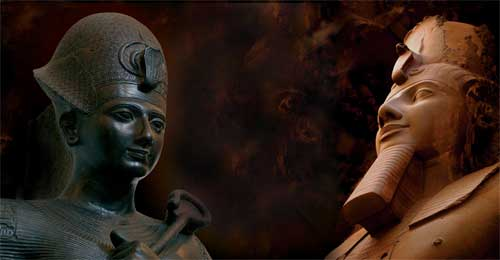Ozymandias was the classical name for Ramesses the Great of the 19th Dynasty who fought the famous Battle of Kadesh whilst still in his late teens. The reliefs of the young king’s heroic deeds during the near disastrous battle against the Hittites and their allies, led by Emperor Muwatalli, cover the walls of Ramesses II’s numerous temples. In David’s New Chronology, Ramesses is not the Pharaoh of the Exodus (as you will read in most popular books) but rather a contemporary of his vassal and ally, King Solomon of Israel. Once Solomon dies, Ramesses II invades Judah and takes away the treasures of Solomon’s temple in Jerusalem. At the pharaoh’s great mortuary temple, known as the ‘Ramesseum’, the remains of a massive fallen colossus lie forlorn. This is the statue of ‘Ozymandias’, made famous in Shelley’s poem of the same title, which reflects on how great men and their deeds eventually decay back into the dust of time in spite of their fame or infamy.
David takes on this tongue-twister-of-a-song, with pulsating rhythm guitars from Ashley and Kim, drums and piano driving along its tongue-in-cheek lyrics. Guitar solos in the middle and end from Ashley round off this rocky sandstone track.
10. Solomon the Wise music by David Rohl & Kim Turner, lyrics by David Rohl; vocal by Marc Atkinson
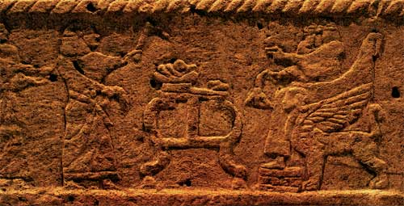Solomon married Pharaoh’s Daughter to seal his peace treaty with Egypt, and it was this guarantee of stability and security that enabled Israel to prosper under his wise and politically savvy rule. His trading expeditions down the Red Sea to the mysterious land of Ophir (perhaps as far as India) brought exotic produce to Israel which was used to adorn the palaces and temple in Jerusalem, making Solomon the most celebrated king in Israel’s history.
Another vocal from Marc as this acoustic-guitar-based song builds to its final choruses and dynamic end fade, with orchestra, solo guitar, piano and vocals combining in harmonic cacophony.
11. Akhiyawa music & lyrics by David Rohl; vocal by David Rohl
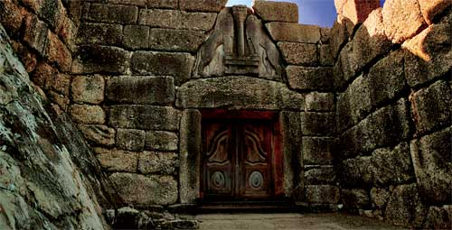We then leave Egypt, Israel and the Near East behind to return to the story of our Indo-European ancestors, made legend in the heroic tales of Homer’s Iliad and Odyssey. Akhiyawa was the name given to Bronze Age Greece by the Hittites of Anatolia (modern Turkey), reflected in Homer’s appellation for Agamemnon’s Greeks – the Achaeans. We all know the story of the Greek siege of Troy in north-west Anatolia, of the great battles fought in the plain of the Troad, the heroes being transported to the fight in chariots, carrying ‘tower shields’ which covered them from head to toe. Finally, Troy fell to the ruse of the wooden horse which enabled the Greeks to sack and burn mighty Ilios (Troy’s other name) to the ground, killing the men and carrying off the women into slavery. That catastrophe, born of greed and power-lust, brought an end to the heroic age of bronze and led to the less super-human Classical era of Greece and Rome.
Again sung by David, this dramatic tale begins with the voice of an ancient eye-witness to the sacrifice of Agamemnon’s daughter, Iphigenia, who is offered up by the king of Mycenae to appease the goddess Artemis and provide a fair wind to take his massive invading fleet across the Aegean to Troy. This horrifying ritual is the work of the evil soothsayer Calchas, an exile from Anatolia, who insists that evil omens must have their terrible consequences. The song ends with a macabre waltz between woodwind and electric guitar.
12. The Wine Dark Sea music by Troy Donockley, lyrics by David Rohl; vocal by David Rohl
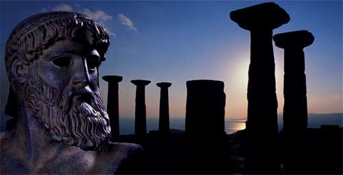With the fall of Troy and the collapse of Bronze Age Greece (due to a failure in the feudal economy brought about by the absence overseas of so many Greek lords during the ten-year siege), the Greeks follow the Phoenicians in their quest for new homes along the shores of the western Mediterranean. The story of this migration by ship is reflected in the tale of Odysseus’ wanderings, but it was the Phoenician seafarers of Tyre, Sidon and Byblos who led the way, founding colonies at Carthage and along the Spanish coast during the 9th to 7th centuries BC.
Here we find our aptly-named Troy indulging himself in a feast of Celtic folk instruments to create the atmosphere on board a wooden ship as it sails upon the open waters of the wine-dark sea (as Homer described the Mediterranean). David adds the vocals and, with Jose, the orchestral strings as they set the scene for the sorry tale of Dido and Aeneas, whose tragic love affair brought centuries of enmity and conflict (the Punic Wars) between nascent Rome and Carthage.
13. Elissa music by David Rohl & Kim Turner, lyrics by Barbara Macanas & David Rohl; vocal by Barbara Macanas and David Rohl
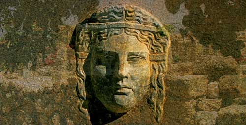Dido (who was really called Elissa but given her more famous name by the local inhabitants because she was a ‘foreigner’) is a Phoenician princess whose husband was murdered by her younger brother Pygmalion to secure his claim to the throne of Tyre. Fearing for her own life, Elissa and her followers flee westwards in a fleet of ships, crossing the sea to found the colony of Carthage on the north African coast of what is now Tunisia. As ruler of Carthage she gives a hospitable welcome to another fleet of ships, this time carrying refugees from the fall of Troy, led by Aeneas, the only surviving hero of the Trojan War. Dido and Aeneas have a short but passionate affair before Aeneas’ abandons his lover and heads off to fulfil his prophesied destiny, leaving the Carthaginian queen distraught and suicidal. As the Trojan fleet departs for Italy, Dido takes her lover’s abandoned sword, climbs onto a funeral pyre and, amidst the flames, plunges the weapon into her chest, cursing Aeneas and his descendants with her last breath.
Here Barbara and David sing in duet style to tell the fateful tale of the two lovers, whilst the band plays a laid back rhythm as if guesting in a sleazy, smoke-filled bar located in down-town Mexico City (David’s description of the backing track). The Latin feel takes a fleeting pause as David recalls the moment of Elissa’s suicide through the voice of Rome’s 1st-century historiographic poet, Virgil, immersed in Woolly’s ‘appassionata’ of lush orchestral strings. The Latin mood soon returns to provide the background to a searing high whistle solo from Troy as Elissa’s soul cries out for a lover’s revenge.
14. Roots music & lyrics by Woolly Wolstenholme; vocal by Woolly Wolstenholme
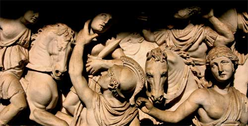Finally, after another rain-soaked passage from Virgil, we reach the end of ‘BC’ with Woolly’s orchestral masterpiece recalling Aeneas’ death in battle beside the River Numicas, just a few miles from the hills that would become the eternal city of Rome. Having landed on the shores of western Italy to establish the city of Lavinium, Aeneas marries the daughter of the local Latin ruler, thus beginning a dynasty of Trojan-Latin kings who would go on to found Rome (the story of Romulus and Remus) and eventually establish the Roman Empire through Aeneas’ distant descendants Julius and Augustus Caesar. With the death and heroic funeral of the Trojan hero Aeneas, the roots of the ancient world are buried in the rich dark soil of Lavinium, overlooking the Tyrrhenian Sea, as a new era begins with the rise of Classical Rome from the ashes of windy Troy.